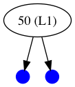
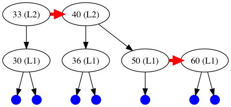
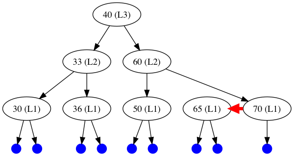
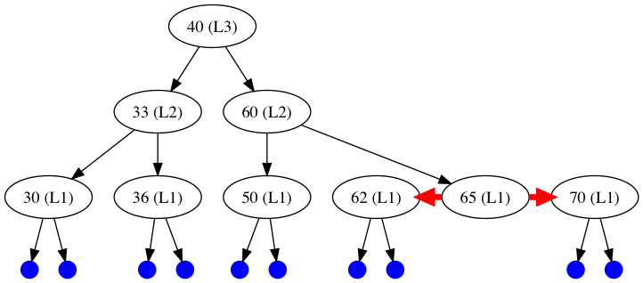
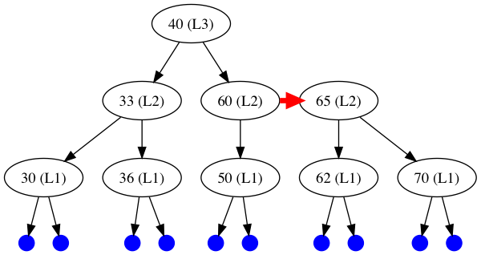
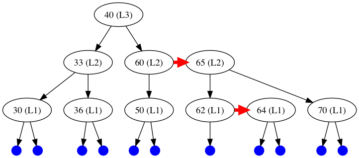
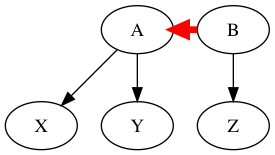
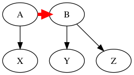
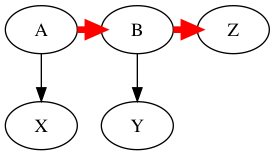
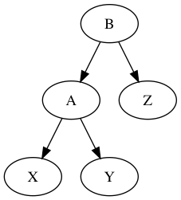

Part C: Data structures: AA trees
Contents
Part C: Data structures: AA trees#
In this section you’ll be implementing a nontrivial data structure. This section is worth 8 marks in all.
Background information#
In this section, we are going to implement a non-trivial data structure called an “AA tree”. The name “AA” comes from the inventor of the data structure, the Swedish computer scientist Arne Andersson. AA trees are an example of a “self-balancing binary search tree”. It is a comparatively recent invention; the first paper describing it came out in 1993. It is one of a fairly large family of self-balancing binary search trees; other data structures in this family include red-black trees, AVL trees, 2-3 trees, 2-3-4 trees, B-trees etc. AA trees are interesting because they are among the simplest to implement and yet still perform well.
Before we get into the details of this data structure, let’s explain why such a thing is desirable. Many practical applications of interest require set-like or map-like collections of values which have (at least!) the following requirements:
You have to be able to find a particular value in the collection as quickly as possible (or report that it isn’t there).
You have to be able to add a new value to the collection as quickly as possible.
The collection mustn’t duplicate the values searched over.
The difference between a set and a map is that sets are just the values in the collection, while maps have an associated value for each “key” value in the map. Our AA trees will implement sets of integers, which is about as simple as it gets.
If we didn’t care about efficiency, we can easily implement a set of integers using a list of integers. To find whether a particular integer is in the set, we just have to search through the list. This is an \(O(N)\) operation, where \(N\) is the length of the list, so it’s rather slow. To add a value to the list (making sure there are no duplicates), we can just search for the value in the list; if it’s found, there is no need to add it, and if not, we can add it to the front of the list. This is also \(O(N)\). (If we don’t mind repeated elements, we can just add it to the front of the list without searching, which is \(O(1)\).)
Somewhere along the line, someone realized that if we arranged the data in a binary tree-like data structure, we can potentially get much faster searches (\(O(log\ N)\) instead of \(O(N)\)) and also get \(O(log\ N)\) insertions. To do this, we create nodes containing three things: a data value, a left subtree, and a right subtree. A subtree can be a leaf (no data) or another node. In OCaml, such a data structure would look like this:
(* Assume we are storing only integers in the tree. *)
type tree =
| Leaf
| Node of int * tree * tree (* data value, left subtree, right subtree *)
We further stipulate that all the elements in the left subtree of a node are strictly less than the value at the node, and all the elements in the right subtree are strictly greater than the value at the node (this makes the tree an ordered binary tree). Clearly, this will only work if the values stored in the tree are orderable (like integers).
Searching through a tree like this is easy (you’ll write the code below). Insertion is also easy: you simply walk down the tree until you reach a leaf where the new value ought to go, and then replace the leaf with a node whose two subtrees are leaves. If the tree is roughly balanced (the left and right subtrees of all nodes are about the same size), then looking up a value in the tree or inserting a value into the tree is \(O(log\ N)\), where \(N\) is the number of values stored in the tree. That’s because on average, going to a left or right subtree of a node gets rid of about half of the values in the tree, and after roughly \(log_2 N\) divisions by two you will end up at a leaf.
Unfortunately, if you add elements to the tree naively, you can easily end up with an unbalanced tree, where some branches of the tree are empty and others have large numbers of nodes. In the worst case, the tree will only have nodes on one side (left or right) and then it’s no better than a linked list. There needs to be some way to make sure that the tree stays balanced when you add new values to it. If you can guarantee that the tree stays balanced, you can guarantee that searching for values in the tree and adding new values to the tree are \(O(log\ N)\) operations, which is acceptably fast for many applications.
Self-balancing binary trees generally have additional data in each node which helps in the balancing operation. In the case of AA trees, this data is called a level and is an integer >= 0. Leaves have a level of zero (this does not need to be stored explicitly in the tree), while nodes have levels > 0. The way that levels are assigned to nodes will be described below.
Some terminology we’ll use:
The root node of a tree is the topmost node of the tree.
The level of a tree is the level of the root node of the tree.
A child node of a node is the root node of one of its subtrees.
A parent node of a node is the node which has the original node as one of its child nodes. Note that root nodes have no parent node.
A grandparent node is the parent node of a node’s parent node.
Naively adding a value to a tree is adding a node containing the value to the tree without worrying about whether the tree becomes unbalanced or not.
For the purposes of these terms, a leaf is considered a kind of node.
Here is the definition of the AA tree datatype we will use. This tree can only store integers.
type tree =
| Leaf
| Node of int * int * tree * tree (* level, value, left/right subtrees *)
This is the same as the definition of tree given above, except that
there is an extra int value stored at each node representing the
level of the node. Note that the first int value in the node is the
level and the second one is the integer value being stored at the node.
After that comes the left and right subtrees of the node, which can be
Leaf nodes or not.
An AA tree must satisfy the following invariants:
A node’s value must be strictly larger than any value stored in its left subtree and strictly smaller than any value stored in its right subtree. (This is the order invariant.)
The data values stored in the tree must contain no duplicates.
The level of a
Leafis zero.The level of a
Nodemust be either the same as that of its right subtree or one greater. If it is the same, the link between the node and its parent is called a “horizontal link”.The level of a
Nodemust be exactly one greater than the level of its left subtree. In other words, you can’t have a horizontal link from a node to its left subtree.The level of a
Nodemust be strictly less than that of its grandparent. In other words, you can’t have a node with a right child whose level is the same which also has a right child whose level is the same. Put differently, you can’t have two consecutive horizontal links. (This is obvious for the left child of a node, since you can’t have horizontal links at all on left children.)
Also, when a value is added to a tree, it is added as a node of level 1 whose subtrees are both leaves.
Note that some of these invariants can (and will) be violated temporarily while inserting new values into an AA tree, but then the tree must be readjusted so that the invariants again apply.
The AA trees we will be working with are purely functional, so (for instance) inserting an integer into a tree will yield a new tree instead of changing the old one.
Examples#
Let’s look at some AA trees. We’ll add some integers between 1 and 100 to an empty AA tree and see what the resulting trees look like. In some cases, adding a number to a tree in a “naive” way would result in an unbalanced tree (which is not a valid AA tree); in that case, after adding the node we will have to rebalance the tree to preserve the invariants. We will look at the tree before and after rebalancing, so you can get an idea of what the balancing operations do before we describe the code you will need to write. All horizontal links will be drawn using large red arrows to make them stand out.
This is a leaf node (which is also an empty tree). It doesn’t store any data. It has depth 0. There’s not much else to say about it.
Adding the number 50 creates a node whose two subtrees are both
leaves. The 50 is the value stored in the node. The (L1) says
that this node has level 1. This has to be the case because its left
subtree is a leaf, which has level 0, and the level of a node is always
exactly one higher than the level of its left subtree (invariant #5).
Adding the number 40 creates a new node on the left subtree of the
node containing 50. The new node has level 1 (as all new nodes must
have), which makes it a left horizontal link. Invariant #5 states that
this is forbidden, so we have to rebalance the tree.
We rebalance the tree by making the right child of the 40 node the
left child of the 50 node and making the 50 node the right child
of the 40 node. This kind of rebalancing, which turns a left
horizontal link into a right horizontal link, is called a “skew”. It is
one of the two rebalancing operations in an AA tree. These kind of
operations are usually referred to as “tree rotations” in the
literature. (Note that most self-balancing trees have many more kinds of
rotations than AA trees do, which is why AA trees are interesting.)
This image shows what happens when we naively add the number 30 to
the tree. It has to go to the left of the 40 node in order to
maintain the order invariant, but now the tree is unbalanced because the
40 node has a left horizontal link. We need to rebalance the tree by
doing another skew operation.
This is what happens after we have rebalanced the tree. We have made the
right subtree of the 30 node the left subtree of the 40 node,
and we’ve made the 40 node the right subtree of the 30 node.
This, like all skew operations, turns a left horizontal link into a
right one.
However, we’re not out of the woods just yet. Now we have two
consecutive right horizontal links coming off of the 30 node, which
violates invariant #6. We need to do another rebalancing operation.
Here is the result of the other rebalancing operation. This operation is
called a “split”. The 40 node is raised to level 2, its left subtree
is given back to the 30 node as the right subtree of the 30
node, and the 30 node is once again made into the left subtree of
the 40 node. Now the tree is balanced again.
You might wonder why we didn’t just take the tree two pictures ago (with
the 30 node as the left subtree of the 40 node and the 50
node as the right subtree) and just incremented the level of the 40
tree. In fact, we could do that; this would be another balancing
operation. However, the point of AA trees is to be as simple to
implement as possible, and this would complicate the implementation.
Plus, the new operation is nothing more than the composition of a skew
and a split.
Now we want to add the number 33 to the tree. This time, we get
lucky. Naively adding the node yield a tree which doesn’t violate any of
the AA tree invariants, so we don’t have to do any rebalancing.
Now we add 36 to the tree, which gives us two consecutive right
horizontal links. This means we need to do a split.
When we do a split, we see that now there is a left horizontal link from
the 40 node, so we need to do a skew at that node.
And there we go! Now our tree is balanced.
Now we add the number 60 to the tree. Again we get lucky; the
resulting tree doesn’t need rebalancing.
Now we add the number 70 to the tree. This results in two
consecutive right horizontal links. Therefore, we need to do a split.
After the split, we now have two consecutive right horizontal links in a
different location (coming off the 33 node). We need to do another
split.
And there you go, another balanced tree. Easy peasy.
Let’s add the number 65 to the tree. This gives a left horizontal
link. From what we’ve discussed already, you should realize that this
means we need to do a skew operation.
After the skew, the tree is again balanced.
Now we add the number 62 to the tree, which creates a left
horizontal link. That means (you guessed it) we need to rebalance the
tree by doing a skew operation.
Doing the skew gives two right horizontal links, so now we need to do a split. Incidentally, this is why we always do skews before splits; a skew can give rise to a tree with the same nodes which needs to be split.
After the split, the tree is balanced.
Finally, we add 64, which doesn’t require any rebalancing.
This concludes the AA tree examples. We hope you now have a clearer idea of how AA trees work and how they stay balanced.
Tree rotations#
In the examples given above, we’ve seen that there are a number of balancing operations or “rotations” that are done to make an unbalanced tree balanced. Be aware that we don’t require that the tree be exactly 100% balanced. In the case of AA trees, the longest path from the root node to a leaf is guaranteed to be no more than twice the length of the shortest path, which preserves the \(O(log\ N)\) lookup and insert properties we want. What the rotations do is rebalance a tree while preserving the order invariant. What kind of rotation you do depends on the way in which the tree is unbalanced. We’ve seen that AA trees have two different kinds of rotations:
skew: changes a left horizontal link to a right horizontal link
split: fixes the case of two consecutive right horizontal links
When you do these rotations in the appropriate circumstances, the tree will become balanced and the order invariant will be preserved.
Here is what a skew looks like. Starting from this:
We go to this:
In this diagram, the A and B nodes have levels one more than the
X, Y and Z nodes in both cases. However, this will not
always be the case. The skew operation only cares that there is a left
horizontal link between A and B. It changes the left horizontal
link to a right horizontal link as shown and moves the subtrees around
as shown. The skew operation doesn’t change the levels of any nodes.
Notice that the arrow (horizontal link) from the A to the B node
changes direction and the right child of A becomes the left child of
B. X, Y, and Z are assumed to be arbitrary balanced
trees.
The other rotation is a split. Starting from this:
We go to this:
Initially, the A, B and Z nodes have a level one greater
than the X and Y nodes (but you don’t have to check for this).
After the split, the only node whose level changes is the B node,
whose level goes up by 1. Notice that this gets rid of the horizontal
links.
That’s all we have to say about rotations!
Inserting into an AA tree#
With rotations (i.e. skew and split), it’s fairly easy to implement insertions into a tree so as to keep the tree balanced. Here is an outline of the algorithm.
First, insert the new value into the tree by following the branches based on the value to be inserted and the values at the nodes. If the new value is smaller than the node value, insert it into the left subtree, if it’s larger, insert it into the right subtree, and if it’s the same, then the new value is already in the tree so do nothing. Once you get to a leaf, replace it with a new node with the new value and two leaves as children. Of course, we want to do this functionally, so we aren’t really replacing anything; we are building up a new tree as we go along out of the parts of the old tree. Therefore, the “replacement” step is to put in a new node with the new value in place of what was a leaf in the original tree; this new node has leaves for children.
Now that we have the new value in the tree, we need to make sure that the tree is balanced, and if not, we need to balance it. The new node we just created is obviously balanced (it has two leaves as children, both of which have depth 0), so we look at the parent of that node, and then the parent of that node, and so on until we reach an unbalanced node or until we reach the root of the tree. If we find an unbalanced node, we do a skew followed by a split to balance the tree at that node, and continue up the tree. Note that we will define the skew and split operations to do nothing on trees which don’t match the specific pattern that the rotations are looking for. Note also that we always do the skew before the split.
That completes our description of AA trees. Now we have to implement this in OCaml!
OCaml implementation#
Everything in this implementation must be purely functional. Do not
use imperative code anywhere. So don’t use ref, or the := or
! operators, or imperative arrays, or mutable record fields, etc.
Recall the definition of the tree type given above:
type tree =
| Leaf
| Node of int * int * tree * tree (* level, value, left/right subtrees *)
Here is what you have to implement.
1. member#
[2 marks]
Write a function called member that takes two arguments: an int
and a tree, and returns true if the int is present in the
tree, or false otherwise.
Note: The levels of the trees don’t matter for this function.
2. skew and split#
[4 marks]
Write the two rotation functions described above; call them skew and
split. Note that not all trees can be changed by a skew or a split
operation; if a tree is not able to be skewed or split, just return the
tree unchanged. Note also that these functions are not recursive; they
only act on the top of the tree.
Both of these functions can be written in a few lines of code each. You
will want to use OCaml’s pattern-matching capabilities on Node
constructors. Remember that pattern-matches on recursive datatypes can
be more than one level. For instance, a pattern match on a Node
constructor doesn’t have to be just:
...
| Node (lvl, v, left, right) ->
...
If left and/or right are also Nodes,
you can put them right into the pattern-match. For instance:
...
| Node (lvl, v, Node (lvl2, v2, ll, lr), Node(lvl3, v3, rl, rr)) ->
...
If the subtrees are not Nodes, the pattern won’t match. Of course,
you don’t have to do this sort of thing, but it can shorten the code you
need to write.
When you convert the diagrams given above to the rotation code, make sure to notice which parts of the trees change and which parts don’t. This can also shorten the code.
You might find this helper function to be useful:
(* Level of an AA tree. *)
let level = function
| Leaf -> 0
| Node (lvl, _, _, _) -> lvl
Examples#
# let t1 = Node (1, 50, Node (1, 40, Leaf, Leaf), Leaf);;
val t1 : tree = Node (1, 50, Node (1, 40, Leaf, Leaf), Leaf)
(* left horizontal link: need to skew *)
# let t2 = skew t1;;
val t2 : tree = Node (1, 40, Leaf, Node (1, 50, Leaf, Leaf))
(* balanced *)
# split t2;;
- : tree = Node (1, 40, Leaf, Node (1, 50, Leaf, Leaf))
(* nothing happens *)
# let t3 = Node (1, 40, Node (1, 30, Leaf, Leaf), Node (1, 50, Leaf, Leaf));;
val t3 : tree =
Node (1, 40, Node (1, 30, Leaf, Leaf), Node (1, 50, Leaf, Leaf))
(* a left horizontal link; need to skew *)
# let t3a = skew t3;;
val t3a : tree =
Node (1, 30, Leaf, Node (1, 40, Leaf, Node (1, 50, Leaf, Leaf)))
(* now we have two consecutive right horizontal links; need to split *)
# let t3b = split t3a;;
val t3b : tree =
Node (2, 40, Node (1, 30, Leaf, Leaf), Node (1, 50, Leaf, Leaf))
(* balanced *)
# let t4 =
Node (2, 40,
Node (1, 30, Leaf, Node (1, 33, Leaf, Node (1, 36, Leaf, Leaf))),
Node (1, 50, Leaf, Leaf));;
val t4 : tree =
Node (2, 40,
Node (1, 30, Leaf, Node (1, 33, Leaf, Node (1, 36, Leaf, Leaf))),
Node (1, 50, Leaf, Leaf))
(* two right horizontal links on left subtree *)
# skew t4;;
- : tree =
Node (2, 40,
Node (1, 30, Leaf, Node (1, 33, Leaf, Node (1, 36, Leaf, Leaf))),
Node (1, 50, Leaf, Leaf))
(* nothing happens *)
# split t4;;
- : tree =
Node (2, 40,
Node (1, 30, Leaf, Node (1, 33, Leaf, Node (1, 36, Leaf, Leaf))),
Node (1, 50, Leaf, Leaf))
(* nothing happens; split only works on the top node *)
# let t4_left =
Node (1, 30, Leaf, Node (1, 33, Leaf, Node (1, 36, Leaf, Leaf)));;
val t4_left : tree =
Node (1, 30, Leaf, Node (1, 33, Leaf, Node (1, 36, Leaf, Leaf)))
(* pull out the left subtree for illustration purposes *)
# skew t4_left;;
- : tree =
Node (1, 30, Leaf, Node (1, 33, Leaf, Node (1, 36, Leaf, Leaf)))
(* nothing happens *)
# split t4_left;;
- : tree =
Node (2, 33, Node (1, 30, Leaf, Leaf), Node (1, 36, Leaf, Leaf))
(* balanced *)
3. insert#
[2 marks]
Write a function called insert which inserts an int into an AA
tree. Here is a skeleton of the function:
let rec insert item t =
match t with
| Leaf -> ...
| Node (lvl, v, l, r) -> ...
item is an int and t is an AA tree, of course. Note that
lvl here means “level”, v means “value”, and l and r
refer to the left and right subtrees of a Node. Here is the
algorithm you should use:
If the tree
tis aLeaf, return aNodewith level 1 containing the item; the subtrees should both beLeaf.If the tree
tis aNodeand the valuevis the same as theitemto be inserted, return the original tree. Nothing needs to be done. (This can be a separate case.)Otherwise, compare
itemtovand add the node to the left or right subtree recursively. The resulting tree can be unbalanced, so do first a skew and then a split operation on that tree, and return the resulting tree. Make sure you do the skew before the split, or it won’t work correctly. (The figures shown previously explain why.)
Examples#
# let t = Leaf;;
val t : tree = Leaf
# let t2 = insert 50 t;;
val t2 : tree = Node (1, 50, Leaf, Leaf)
# let t3 = insert 40 t2;;
val t3 : tree = Node (1, 40, Leaf, Node (1, 50, Leaf, Leaf))
# let t4 = insert 30 t3;;
val t4 : tree =
Node (2, 40, Node (1, 30, Leaf, Leaf), Node (1, 50, Leaf, Leaf))
# let t5 = insert 33 t4;;
val t5 : tree =
Node (2, 40, Node (1, 30, Leaf, Node (1, 33, Leaf, Leaf)),
Node (1, 50, Leaf, Leaf))
# let t6 = insert 36 t5;;
val t6 : tree =
Node (2, 33, Node (1, 30, Leaf, Leaf),
Node (2, 40, Node (1, 36, Leaf, Leaf), Node (1, 50, Leaf, Leaf)))
# let t7 = insert 60 t6;;
val t7 : tree =
Node (2, 33, Node (1, 30, Leaf, Leaf),
Node (2, 40, Node (1, 36, Leaf, Leaf),
Node (1, 50, Leaf, Node (1, 60, Leaf, Leaf))))
# let t8 = insert 70 t7;;
val t8 : tree =
Node (3, 40,
Node (2, 33, Node (1, 30, Leaf, Leaf), Node (1, 36, Leaf, Leaf)),
Node (2, 60, Node (1, 50, Leaf, Leaf), Node (1, 70, Leaf, Leaf)))
# let t9 = insert 65 t8;;
val t9 : tree =
Node (3, 40,
Node (2, 33, Node (1, 30, Leaf, Leaf), Node (1, 36, Leaf, Leaf)),
Node (2, 60, Node (1, 50, Leaf, Leaf),
Node (1, 65, Leaf, Node (1, 70, Leaf, Leaf))))
# let t10 = insert 62 t9;;
val t10 : tree =
Node (3, 40,
Node (2, 33, Node (1, 30, Leaf, Leaf), Node (1, 36, Leaf, Leaf)),
Node (2, 60, Node (1, 50, Leaf, Leaf),
Node (2, 65, Node (1, 62, Leaf, Leaf), Node (1, 70, Leaf, Leaf))))
# let t11 = insert 64 t10;;
val t11 : tree =
Node (3, 40,
Node (2, 33, Node (1, 30, Leaf, Leaf), Node (1, 36, Leaf, Leaf)),
Node (2, 60, Node (1, 50, Leaf, Leaf),
Node (2, 65, Node (1, 62, Leaf, Node (1, 64, Leaf, Leaf)),
Node (1, 70, Leaf, Leaf))))
This function again only needs to be a few lines long. Compared to nearly all other self-balancing tree algorithms, AA trees are so simple to implement it’s almost a joke.
Testing#
Use the test script to check if your code runs correctly. Here are some functions that might be useful to you when testing by hand:
(* Level of an AA tree. Also defined above. *)
let level = function
| Leaf -> 0
| Node (lvl, _, _, _) -> l
(* Extract the data value from a node. *)
let value = function
| Leaf -> -1 (* sentinel value; we assume nodes only have positive values *)
| Node (_, v, _, _) -> v
(* Test if a tree is a valid AA tree. *)
let rec is_aa_tree tree =
let levels_ok lvl ll lr parent_lvl =
lvl = ll + 1 && (lvl = lr + 1 || (lvl = lr && lvl + 1 = parent_lvl))
in
let values_ok v lv rv =
match (lv, rv) with
| (-1, -1) -> true
| (-1, r) -> v < r
| (l, -1) -> v > l
| (l, r) -> v > l && v < r
in
let rec aux t parent_lvl =
match t with
| Leaf -> true
| Node (lvl, _, _, _) when lvl < 1 -> false
| Node (lvl, v, l, r) ->
let ll = level l in
let lr = level r in
let lv = value l in
let rv = value r in
let ok_levels = levels_ok lvl ll lr parent_lvl in
let ok_values = values_ok v lv rv in
ok_levels && ok_values && aux l lvl && aux r lvl
in
(* Create a fictitious "parent level" for the root which is
* one more than the tree level.
* This is the most permissive case. *)
aux tree (level tree + 1)
Visualizing your trees#
Finally, it’s easiest to see what’s going on in your code if you can visualize the trees generated by your code. Here is a function which will give you a (barely) human-readable display of an AA tree:
let print_tree tree =
let blanks n = String.make n ' ' in
let rec aux tree indent =
let ind = blanks indent in
match tree with
| Leaf -> Printf.printf "%sLeaf\n" ind
| Node (d, v, l, r) ->
begin
Printf.printf "%sNode[(%d) [level %d]\n" ind v d;
aux l (indent + 2);
Printf.printf "%s ----\n" ind;
aux r (indent + 2);
Printf.printf "%s]\n" ind;
end
in
aux tree 0
Here’s a useful function to convert a list into a tree; the items in the list are added to the tree from left to right.
let tree_of_list lst = List.fold_left (fun l i -> insert i l) Leaf lst
Here are some examples of how to use these functions:
# let pt lst = print_tree (tree_of_list lst);;
val pt : int list -> unit = <fun>
# pt [];;
Leaf
- : unit = ()
# pt [50;40;30];;
Node[(40) [level 2]
Node[(30) [level 1]
Leaf
----
Leaf
]
----
Node[(50) [level 1]
Leaf
----
Leaf
]
]
- : unit = ()
# pt [50;40;30;33;36;60;70;65;62;64];;
Node[(40) [level 3]
Node[(33) [level 2]
Node[(30) [level 1]
Leaf
----
Leaf
]
----
Node[(36) [level 1]
Leaf
----
Leaf
]
]
----
Node[(60) [level 2]
Node[(50) [level 1]
Leaf
----
Leaf
]
----
Node[(65) [level 2]
Node[(62) [level 1]
Leaf
----
Node[(64) [level 1]
Leaf
----
Leaf
]
]
----
Node[(70) [level 1]
Leaf
----
Leaf
]
]
]
]
- : unit = ()
[End of midterm exam]